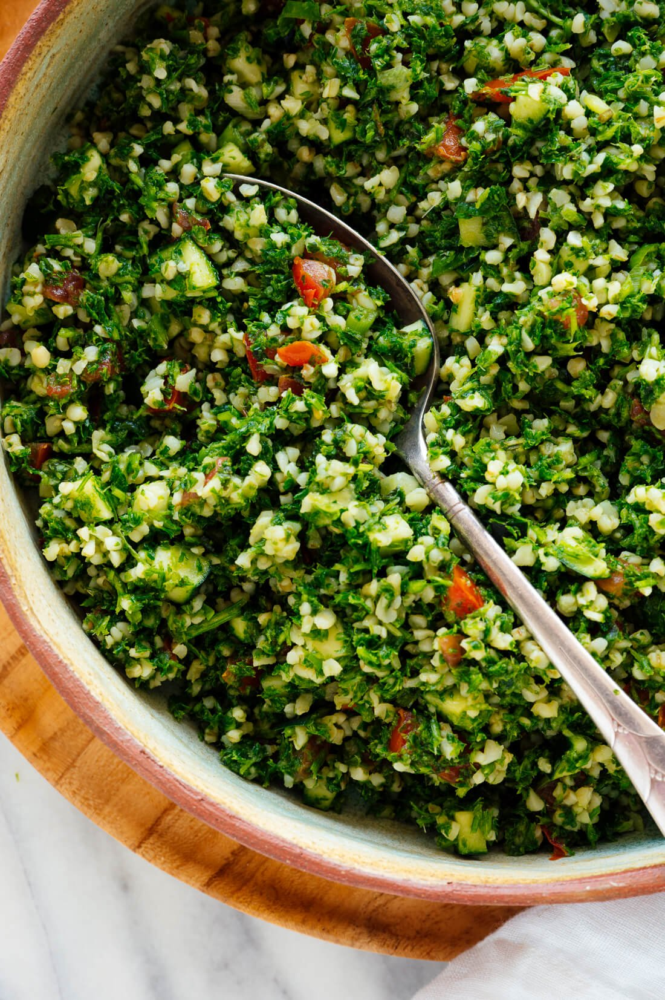

Tabbouleh Recipe

Dish description
Tabbouleh is an extremely healthy salad from the Middle East.
It is simply a mix of finely chopped vegetables and herbs, seasoned with olive oil and lemon juice.
Of course, it is possible to improve on this recipe, but this will be a basic, easy to make recipe.
Ingredients
- 1 cup diced cucumber
- 1 cup diced tomato
- 1 teaspoon salt
- 3 bunches of parsley
- 1/3 cup chopped mint (optional, but highly recommended)
- 1/3 cup sliced green onion
- 1/3 cup olive oil
- 1 medium clove garlic, chopped or pressed
Recipe Steps
- Combine diced tomato and cucumber in bowl with 1/2 teaspoon of salt. Let rest 10 minutes.
- Prepare the parsley: chop off thick stems then chop heads and remaining stems together.
- Add mint, green onion, and prepared parsley to a bowl
- Strain out excess juice from tomatoes and cucumbers, and add to the parsley bowl.
- Add olive oil, lemon juice, garlic, and remaining salt. Mix well.
- Can add more salt, lemon juice, or garlic to taste!
Back to Main Page